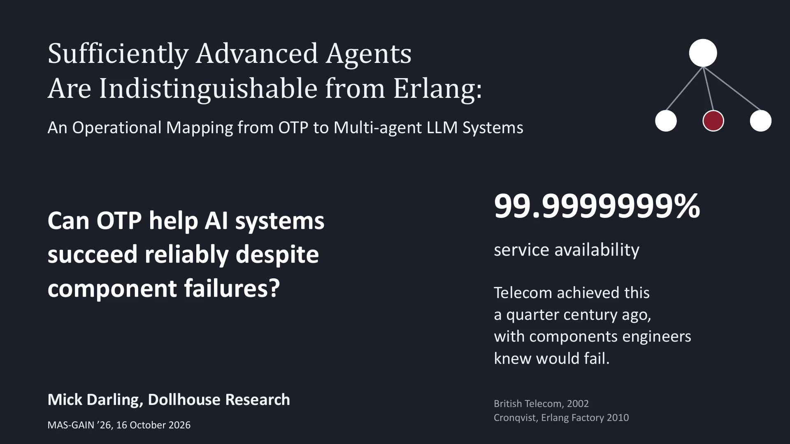

Research / MAS-GAIN ’26
Sufficiently Advanced Agents Are Indistinguishable from Erlang: An Operational Mapping from OTP to Multi-agent LLM Systems
Mick Darling · MAS-GAIN ’26 · 2026
Published , pp. 26–33. Presented remotely at MAS-GAIN ’26 in Munich on October 16, 2026, co-located with ASE 2026.
Read the published paper (ACM DOI) · ACM proceedings
Download the author version (PDF)
The author version retains its original attribution and CC BY 4.0 license.
Paper summary
Multi-agent LLM systems face a familiar engineering problem: building reliable systems from individually unreliable parts. The paper develops an operational mapping from Erlang/OTP constructs to agent systems and tests supervision as a capability multiplier. It grades twenty mappings as exact, loose, or breaking; these grades describe the correspondence, rather than guarantees implemented by an agent runtime.
The study examines supervision across model tiers, matched-compute controls, and clean-context decomposition. Its limits include semantic failure detection, context leakage, and restart economics. The published paper is the source of truth for the claims; results depend on the evaluated tasks, models, and controls, and compute parity was not certified in the matched-compute runs.
Presentation and appendix
The main presentation has 17 slides. The complete deck includes those slides followed by 24 backup/Q&A slides after the thank-you slide. The video covers the main presentation; the appendix is additional reading.
Download the complete 41-slide deck (PDF)

Download English captions (WebVTT)
Reading the additional research
Slides 34–41 carry the qualification: “Beyond the paper. Not peer reviewed. Review welcome.” This is a review-status distinction; some experiments predate camera-ready submission. The additional material does not extend the paper’s peer-reviewed claims.
- “GAIA-style” tasks are distinct from a full GAIA benchmark score.
- Luna contrasts were not statistically significant. The intended Qwen token-budget treatment was invalid. Ceiling-only baselines do not demonstrate supervision uplift.
- The deterministic output-actor spot check was small and exploratory. Keep task and provider scope with those results.
- Gateway qualification snapshots describe the evaluated checks; they do not prove recovery or production readiness.
- The appendix’s evidence descriptions do not imply that raw shards, replay bundles, or an apparatus release are publicly available.
Citation
Mick Darling. 2026. Sufficiently Advanced Agents Are Indistinguishable from Erlang: An Operational Mapping from OTP to Multi-agent LLM Systems. In Proceedings of the 2nd International Workshop on Multi-Agent Systems using Generative Artificial INtelligence for Automated Software Engineering (MAS-GAIN ’26). ACM, 26–33. https://doi.org/10.1145/3843778.3856135.
@inproceedings{darling2026sufficiently,
author = {Darling, Mick},
title = {Sufficiently Advanced Agents Are Indistinguishable from Erlang:
An Operational Mapping from OTP to Multi-agent LLM Systems},
booktitle = {Proceedings of the 2nd International Workshop on Multi-Agent
Systems using Generative Artificial INtelligence for
Automated Software Engineering},
series = {MAS-GAIN '26},
year = {2026},
pages = {26--33},
publisher = {ACM},
doi = {10.1145/3843778.3856135},
url = {https://doi.org/10.1145/3843778.3856135}
}